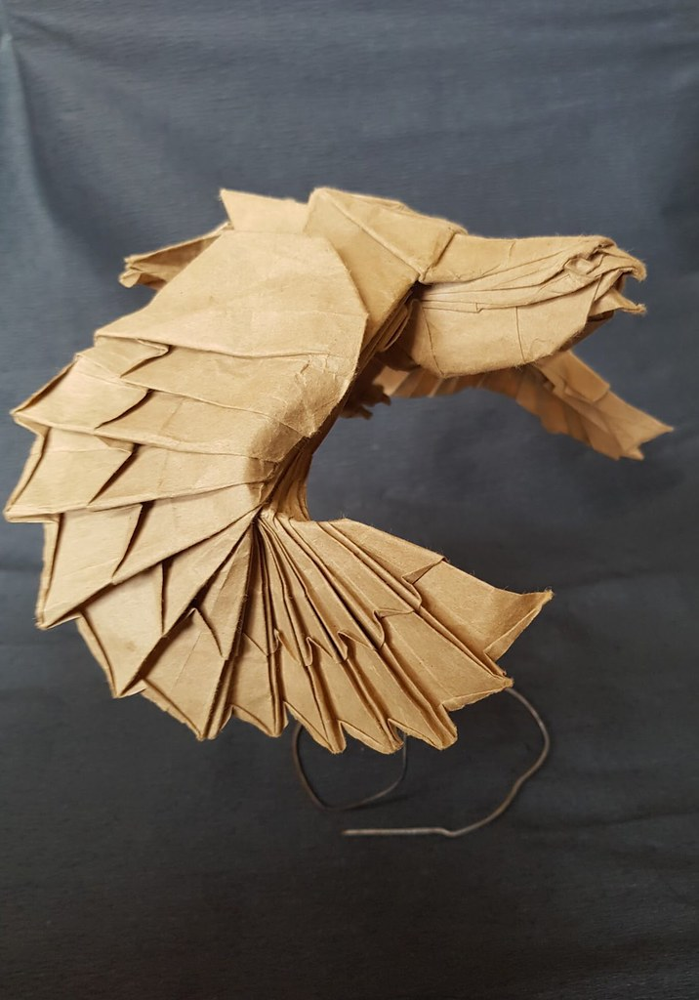

ORIGAMI DESIGNS
About-me
Follow-Us
What is Origami?
Ans:Origami is the art of paper folding, which is often associated with Japanese culture.
In modern usage, the word "origami" is used as an inclusive term for all folding practices,
regardless of their culture of origin.
The goal is to transform a flat square sheet of paper into a finished sculpture through
folding and sculpting techniques.
Modern origami practitioners generally discourage the use of
cuts, glue, or markings on the paper.
Origami folders often use the Japanese word kirigami to refer to designs which use cuts.
Click on the image the see how it is made
Interesting facts about Camels
-
They store fat in parts of their bodies known as humps.
-
They can live for about 40 years.
-
Humps act as heat regulators for camels.
-
They can go for weeks without drinking water.
-
Camel is called the "Ship of Desert"
because it is the only mean of transportation found in deserts
which helps human being go from one place to another easily in the desert.
It has humps which help it to survive long dry periods without water.

Interesting facts about Eagles
